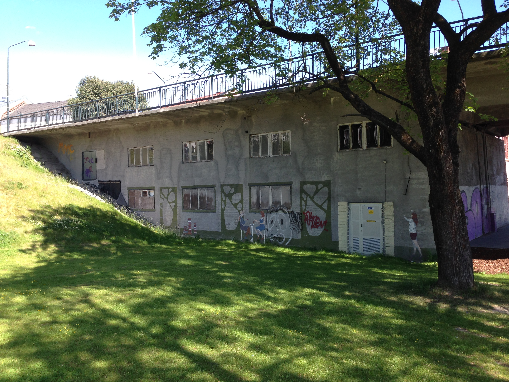

Innlegg
Årsmøte 2017

Klubben minner om årsmøtet som avholdes fredag 24.3.2017 kl 18.00 under enkle forhold i Nordre Brukar. Lokalet er under oppussing så ta gjerne på deg varme klær. Obs det er ikke toalett i lokalet enda.
Komplett saksliste med vedlegg kan lastes ned her: 2017 årsmøtedokument Ringerike TKD